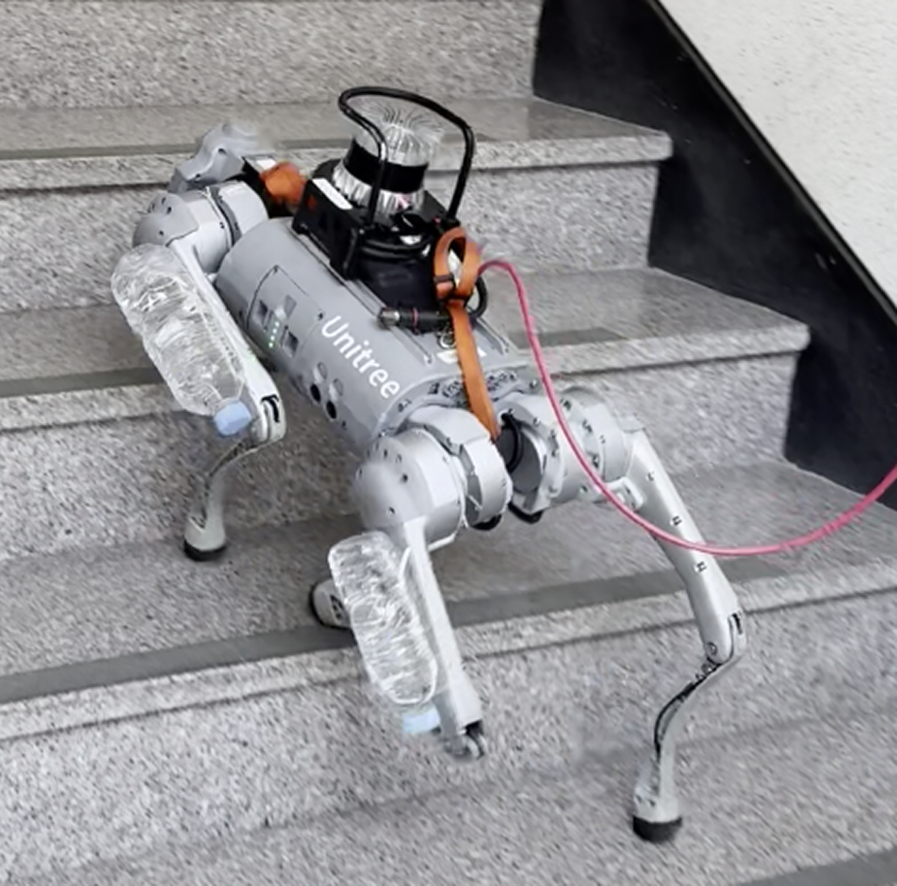

|
Seonsoo Kim I'm a researcher at AI center of the Agency for Defense Development (ADD) in South Korea. I finished my undergraduate studies at the Gwangju Institute of Science and Technology (GIST) with the highest GPA (1st/97). I have experience in controlling a 7-DoF manipulator, developing exploration frameworks for UGVs, and working with quadrupedal robots. My research focuses on how models can rapidly and accurately develop an understanding of the world, enabling robots to adapt efficiently to complex environments. Inspired by human intelligence, I aim to design approaches that simplify robotics problem-solving and reduce the effort required from humans. I am also preparing for a PhD in Robotics and AI starting in Fall 2027 after my military service. |

|
ResearchI'm interested in robotics, control, reinforcement learning, and deep learning. |
|  |
Disentangled Multi-Context Meta-Learning: Unlocking Robust and Generalized Task Learning
Seonsoo Kim, J. Kang, T. Kim, S. Hong Conference on Robot Learning (CoRL), 2025 (Poster) project page Disentangling task features with meta learning for robust and generalizable task understanding. |
|
template
|